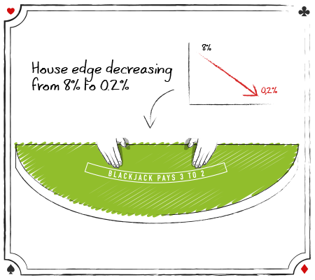

كيف تلعب بلاك جاك؟

قواعد بلاك جاك الأساسيّة
- تبدأ لعبة بلاك جاك حينما يقوم اللاعبون بوضع رهاناتهم.
- يقوم موزع بلاك جاك بإعطاء كل لاعب ورقتينِ ويُعطي لنفسه ورقتينِ أيضًا (بطاقة مقلوبة وبطاقة مكشوفة).
- قيِّم بطاقات بلاك جاك: جميع البطاقات تحمل القيمة المكتوبة عليها في لعبة بلاك جاك، أمَّا بطاقات الصور فهي تُساوي 10 ويُمكن أن تكون الآس إما 1 أو 11 وفقًا لما هو أفضل ليد اللاعب، لا توجد أهميّة للرموز التي تحملها البطاقات في لعبة بلاك جاك وما يُحدد فوز اللاعبين أو خساراتهم هو القيمَّة الإجماليّة لليد فقط.
- يجب أن يقرر اللاعبون ما إذا كانوا سيقفون stand أو يضربون hit أو يستسلمون surrender أو يتضاعفون double down أو سيُقسِّمون أيديهم split.
- يكون قرار الموزع هو الأخير بين قرارات اللاعبين ويجب أن يستخدم الموزع خيار hit إذا كانت قيمة يده 16 نقطة أو أقل وأن يستخدم خيار stand إذا كانت قيمَّة يده تتراوح بين 17 إلى 21.
- يفوز اللاعبون عندما تكون قيمَّة أيديهم أعلى من قيمَّة يد الموزع، أو عندما يكون معهم 21 أو أقل في حين يكون الموزع قد تجاوز 21.
هذه هي قواعد بلاك جاك الأساسيّة. فهل أنت جاهز لتعلُم كل تفاصيل اللعبة؟ دعونا نبدأ.
بداية لعب بلاك جاك
 في هذا الفصل الافتتاحي، ستتعرف على:
في هذا الفصل الافتتاحي، ستتعرف على:
تاريخ لعبة بلاك حاك وأصولها وكيف أصبح الرقم “21” هو اسم للعبة بلاك جاك، ومن هم اللاعبون الرواد الذين طوروا أول إستراتيجية أساسية للعب بلاك جاك، ولماذا تُعتبَّر لعبة بلاك جاك “مختلفة” عن غيرها من ألعاب الكازينو؟ وكيف يمكننا استغلال هذا الاختلاف؟ وكيف يتمتَّع الكازينو بميزَّة فوز على اللاعبين وما يمكننا القيام به حيال ذلك؟
قبل أن تتمكن من البدء في تعلم كيفية لعب لعبة بلاك جاك، عليك أن تعرِّف ما هي القواعد الأساسيّة للعبة- وما هو الهدف من اللعبة بالإضافة إلى بعض البروتوكولات لكي تتمكن من اللعب في الكازينوهات التقليديّة مع غيرك من اللاعبين.
قواعد بلاك جاك
إذا أطلعَّت على الكُتيبَّات التي تُباع في الكازينو حول “كيفية لعب لعبة بلاك جاك” فإنك ستجدها تُخبرَّك دائمًا أن الهدف من لعبة بلاك جاك هو الاقتراب من 21 إلى أقصى درجة مُمكنَّة ولكن هذا خطأ!
الهدف من لعبة بلاك جاك هو: التغلب على يد الموزع بأي من الطريقتينِ:
- أن تتفوَّق يدك على يد الموزع.
- أن يتجاوز الموزع قيمة الـ 21 بينما
قِيَّم البطاقات
 كما هو مذكور في الأعلى، فإن كل بطاقة في لعبة بلاك جاك تحمل القيمَّة المكتوبة عليها وتحمل بطاقات الصور 10 نقاط فيما يُمكن أن تُساوي بطاقة الآس إما 1 أو 11. لا تؤثِّر رموز البطاقات أو ألوانها على لعبة بلاك جاك. قيمَّة اليدّ هي إجمالي قِيِّم البطاقات الموجودة في اليدّ، فاليد التي تحتوي على بطاقات 4-5-8 ستكون قيمتها هي 17، أما إذّا كانت اليدّ تحتوي على بطاقة Queen و 5 فستكون قيمتها هي 15. من المُفترَّض دائمًا أن تكون قيمَّة الآس هو 11 لكن في حالة إذا تجاوزت يدَّك الـ 21 فإن الآس يعود إلى قيمَّة 1 مرة أخرى.
كما هو مذكور في الأعلى، فإن كل بطاقة في لعبة بلاك جاك تحمل القيمَّة المكتوبة عليها وتحمل بطاقات الصور 10 نقاط فيما يُمكن أن تُساوي بطاقة الآس إما 1 أو 11. لا تؤثِّر رموز البطاقات أو ألوانها على لعبة بلاك جاك. قيمَّة اليدّ هي إجمالي قِيِّم البطاقات الموجودة في اليدّ، فاليد التي تحتوي على بطاقات 4-5-8 ستكون قيمتها هي 17، أما إذّا كانت اليدّ تحتوي على بطاقة Queen و 5 فستكون قيمتها هي 15. من المُفترَّض دائمًا أن تكون قيمَّة الآس هو 11 لكن في حالة إذا تجاوزت يدَّك الـ 21 فإن الآس يعود إلى قيمَّة 1 مرة أخرى.
تجاوز الـ 21 Busting
يُشار إلى تجاوز اللاعبين لقيمَّة الـ 21 باسم Busting (ويتم أيضًا استخدام مُصطلح Break للإشارة إلى تجاوز يد الموزع للـ 21). فمثلًا إذَّا كان مع اللاعب بطاقتينِ 10 و 6 وسحَّب ورقة أخرى وكانت قيمتها هي 9 فإن يد اللاعب تكون (Busted) أي أنها تجاوزت القيمَّة المُحددة وأصبح إجمالي أوراقها يُساوي 25 وبالتالي يكون اللاعب قد خرَّج من اللعبة وخسر رهانه.
اليدّ القاسيّة مُقابل اليدّ الناعمّة
اليد القاسية hard hand هي اليدّ التي لا تحتوي على الآس وإذا كانت تحتوي على الآس فإن قيمته ستُحسَّب على أنها 1 فقط.
على سبيل المثال، فإن اليدّ التي تحتوي على 8 – 10 فقط هي يدّ قاسيَّة hard hand، واليد التي تحتوي على 10 – 2 – 5 – A فإن هذه اليدّ أيضًا قاسيَّة لأن الآس فيها تُساوي 1 وليس 11.
أمَّا إذّا كانت اليدّ تحتوي على A – 5 فإن هذه اليدّ ستكون لينَّة أو Soft Hand وكذلك اليدّ التي تحتوي على A – 2 – 5 واليدّ التي تحتوي على A – 3 -2 -3 فإن هذه اليدّ أيضًا ستكون لينَّة.
عندما تتلقى أول بطاقتينِ وتكون إحدى البطاقتينِ هي الآس فإن قيمتها ستكون 11 بالتأكيد وستكون يدَّك لينَّة، لكنك في أغلب الأحيان ستلجئ إلى سحب المزيد من البطاقات وبالتالي فإن يدَّك ستتحوَّل من كونها يدًا لينَّة Soft Hand إلى يدٍ قاسيَّة Hard Hand.
على سبيل المثال، لنفترض أن اللاعب قد حصل على ورقتَينِ 5 – A فإن هذه اليدّ ستُساوي 16 لكن اللاعب سيكون في حاجة إلى سحب المزيد من البطاقات لكي يصِّل إلى قيمةٍ أعلى ويتفوق على الموزع وافترض مثلًا أنه قد سحب بطاقة تحمل الرقم 6 فإن اللاعب الآن سيكون لديه 12 نقطة لأن بطاقة الآس تحولَّت قيمتها من 11 إلى 1 (تذكَّر أنه لا يُمكن ليدَّك أن تتجاوز قيمَّة الـ 21 إذا كانت يدًا ناعمَّة).
لابد على اللاعبين أن يعرفوا الفروق والخصائص الأساسيّة بين اليدّ القاسيّة واليدّ الناعمّة في لعبة بلاك جاك لأن استراتيجيّة اللعب تختلف بناءً على إجمالي قيمَّة اليدّ التي يمتلكها اللاعب. على سبيل المثال، فإن قرارات اللاعب الذي يمتلك يدًا تحتوي على 10-6 (hard 16) تكون مُختلفة عن قرارات اللاعب الذي يمتلك A-5 (Soft 16).
قواعد الرهان في لعبة بلاك جاك
 يتم لعب بلاك جاك على طاولة شبه دائرية مُغطاة بقطعة قماش خضراء وتتسِّع هذه الطاولة لما يصل إلى 7 لاعبين كحد أقصى. أمام كل لاعب على الطاولة هناك دائرة أو مُربع يُعرَّف باسم “Betting Spot” يقوم اللاعبون بوضع الرهان في هذا المُربع باستخدام رقائق الكازينو.
يتم لعب بلاك جاك على طاولة شبه دائرية مُغطاة بقطعة قماش خضراء وتتسِّع هذه الطاولة لما يصل إلى 7 لاعبين كحد أقصى. أمام كل لاعب على الطاولة هناك دائرة أو مُربع يُعرَّف باسم “Betting Spot” يقوم اللاعبون بوضع الرهان في هذا المُربع باستخدام رقائق الكازينو.
يقوم موزعو الكازينو المُدربون بالتعامل مع البطاقات وفقًا لبروتوكولات الكازينو الصارمَّة؛ حيث يقوموا بالترحيب باللاعبين فور جلوسهم على الطاولة ثم طلب وضع الرهانات منهم، وجمع رهانات اللاعبين الخاسرة، ومنح اللاعبين الفائزين أرباحهم، والحفاظ على وتيرة اللعبة بشكلٍ عام.
في أغلب الكازينوهات، لا يتم استخدام المال للرهان على الألعاب المُختلفة. يجب عليك استخدام رقائق الكازينو. لتتمكن من شراء رقائق اللعب، فكل ما عليك هو الجلوس على مقعد الطاولة ثم الانتظار حتى يُكمِّل الموزع الجولة الحاليّة ثم قُم بوضع أموالك على الطاولة أمام الموزع وأطلب من الموزع شراء الرقائق.
سيقوم الموزع بأخذ الأموال وإعطائك الرقائق. عليك أن تتأكد من ترتيب الشرائح بدقّة أمامك وعدم تكديسها، وتسمح مُعظَّم الكازينوهات للاعبين بلعب أكثر من يدٍ في الجولة الواحدة إذا كانت هُناك مقاعد فارغة على الطاولة. إذا قام اللاعب بذلك فعليه أن يُراهِن على كل إجراء وقرار أثناء اللعبة إذَّا كان يرغب في تلقي اليد.
في مُعظَّم الكازينوهات، يتعين على اللاعبين المُراهنة على ضِعف الحدّ الأدنى حينما يقوموا بلعب أكثر من يد.
قيمة رقائق لعبة بلاك جاك
 في معظم الكازينوهات، تحمل الرقائق ألوان مُختلفة للدلالة على قِيمّها بالإضافة إلى أن القيمَّة عادةً ما تكون مكتوبة على الرقاقة نفسها. على سبيل المثال، تُشير الشريحة البيضاء عادةً إلى فئة دولار واحد أما الشريحة الحمراء فهي تُشير إلى 5 دولارات، والخضراء 25 دولارًا، والسوداء 100 دولار، والأرجواني 500 دولار، والبرتقالي 1000 دولار.
في معظم الكازينوهات، تحمل الرقائق ألوان مُختلفة للدلالة على قِيمّها بالإضافة إلى أن القيمَّة عادةً ما تكون مكتوبة على الرقاقة نفسها. على سبيل المثال، تُشير الشريحة البيضاء عادةً إلى فئة دولار واحد أما الشريحة الحمراء فهي تُشير إلى 5 دولارات، والخضراء 25 دولارًا، والسوداء 100 دولار، والأرجواني 500 دولار، والبرتقالي 1000 دولار.
في المصطلحات الدارجة في الكازينو، يُشار إلى الرقائق الحمراء التي تكون قيمتها 5 دولارات غالبًا باسم ” nickels”، أما الرقائق الخضراء التي تكون قيمتها 25 دولارًا فيُشار إليها باسم ” quarters” و 100 دولار من الرقائق السوداء تُعرَّف باسم ” blacks” و 500 دولار من الرقائق البنفسجية باسم ” Barneys” و 1000 دولار من الرقائق البرتقالية باسم “pumpkins”.
عدد البطاقات في الحُزمَّة الواحدة
تحتوي كل طاولة على جدولٍ يُحدد الحد الأدنى والحد الأقصى للرهان. على سبيل المثال، إذا كان الجدول ينصّ على أن الحدّ الأدنى للرهان هو 25 دولارًا فلن يُسمح لك بالرهان بشريحة حمراء (5 دولارات)؛ حيث يجب أن يكون الحد الأدنى للرهان هو 25 دولارًا. لذا قبل الجلوس للعب، تحقق من حدود المراهنة الموجودة على الطاولة.
قبل أن يحصل اللاعبون على الأوراق يجب عليهم أن يُراهِنوا من خلال وضع الرقائق في المكان المُخصص لها على الطاولة. سيحصُل الموزع واللاعبون على بطاقتين، تكون دائمًا بطاقة واحدة من بطاقات الموزع مكشوفة بحيق يُمكن للاعبين رؤيتها (يتم تسميّة هذه البطاقة دائمًا باسم Upcard). أما بطاقة الموزع الأخرى والمعروفة باسم بطاقة الموزع المقلوبة أو hole card فتكون غير مرئية. أما بطاقتي اللاعب فيُمكن أن تكونا مكشوفتينِ أو مقلوبتينِ.
بشكلٍ عامٍ، في الألعاب التي يتم يتم استخدام dealing shoe فيها (فعادةً ما تحتوي على 4 أو 6 أو 8 حزِّم من البطاقات) يتم توزيع البطاقات على اللاعبين وهي مكشوفة وفي هذه الحالة يجب ألا تُمسك البطاقات بيدك.
أمَّا إذا تم توزيع البطاقات على اللاعبين وهي مقلوبة ففي هذه الحالة يُمكنك أن تُمسك البطاقات بيدٍ واحدة فقط وأن تكون يدك الأخرى فوق الطاولة، ثم بعد أن ينظر اللاعب إلى ورقتيه ويرى قيمة ورقة الموزع المكشوفة فيجب عليه أن يتخذ قرار اللعب.
التعامل مع البطاقات يتضمن خيارات اللعب التالية
1. قرار Hit
 يتخذ اللاعبون قرار Hit عندما يُريدوا الحصول على بطاقة إضافيّة من الموزع، ولكي يتمكن اللاعبون من الحصول على بطاقة إضافيَّة فعليهم أن يقوموا بالنقر على بطاقاتك على الطاولة إذا كانت أوراقك مقلوبة، أما إذا كانت أوراقك مكشوفة وتمسكها بيدك فعليك أن تخدش حافة الورقة ليفهم الموزع بأنك تُريد الحصول على بطاقة إضافيّة.
يتخذ اللاعبون قرار Hit عندما يُريدوا الحصول على بطاقة إضافيّة من الموزع، ولكي يتمكن اللاعبون من الحصول على بطاقة إضافيَّة فعليهم أن يقوموا بالنقر على بطاقاتك على الطاولة إذا كانت أوراقك مقلوبة، أما إذا كانت أوراقك مكشوفة وتمسكها بيدك فعليك أن تخدش حافة الورقة ليفهم الموزع بأنك تُريد الحصول على بطاقة إضافيّة.
2. قرار Stand
 يتخذ اللاعبون هذا القرار حينما يكونوا راضون على قيمة أيديهم الحاليّة ولا يُريدوا سحب المزيد من البطاقات.
يتخذ اللاعبون هذا القرار حينما يكونوا راضون على قيمة أيديهم الحاليّة ولا يُريدوا سحب المزيد من البطاقات.
في ألعاب بلاك جاك التي تكون فيها بطاقاتك على الطاولة يُمكنك أن تُلوِّح بيدك على الأوراق لتوضِّح للموزع بأنك لا تُريد المزيد من البطاقات. أما إذا كُنت تمسك البطاقات بيدك، فعليك أن تضع بطاقاتك تحت رقائق الرهان ليعرِّف الموزع بأنك لا تُريد المزيد من البطاقات.
3. قرار Split
 إذا كان لديك ورقتينِ متشابهتينِ مثل؛ 6 – 6 أو A – A. فيُمكنك أن تقوم بتقسيم يدك، أي أن تجعل يكون معك يدينِ ولابد أن تصِّل قيمة كل يد إلى 21 وعندما تقوم باتخاذ هذا القرار يجب عليك أن تضع رهانًا جديدًا مُساويًا لرهانك الأصلي.
إذا كان لديك ورقتينِ متشابهتينِ مثل؛ 6 – 6 أو A – A. فيُمكنك أن تقوم بتقسيم يدك، أي أن تجعل يكون معك يدينِ ولابد أن تصِّل قيمة كل يد إلى 21 وعندما تقوم باتخاذ هذا القرار يجب عليك أن تضع رهانًا جديدًا مُساويًا لرهانك الأصلي.
لكي يفهم الموزع قرارك، يجب عليك أن تضع رقاقة بجانب رقاقة الرهان الأصلية إذا كانت أوراقك على الطاولة.
أما إذا كُنت تمسك البطاقات بيدك، فيجب عليك أن تضعهما على الطاولة مكشوفتين ثم وضع رهانًا مُساويًا للرهان الأول.
ستسمح معظم الكازينوهات للاعبين أيضًا بتقسيم البطاقات ذات قيمة 10 مثل بطاقات jack-ten أو queen-king رُغم أن هذا القرار غير موصى به، كما ستعرف بعد قليل.
4. قرار Doubling Down
 يتيح لك قرار Doubling Down مُضاعفة قيمة رهانك الأول بعد أن تحصل على بطاقة واحدة جديدة.
يتيح لك قرار Doubling Down مُضاعفة قيمة رهانك الأول بعد أن تحصل على بطاقة واحدة جديدة.
في معظم الكازينوهات، يُمكنك مضاعفة رهانك بعد أن تتلقى أول بطاقتين وقبل سحب بطاقة أخرى. لكي تُعبِّر للموزع عن رغبتك في سحب بطاقة جديدة فعليك أن تضع بطاقتيك فوق بعضهما وأن تضع رقاقة الرهان الجديدة فوق رقاقة الرهان السابقة إذا كانت بطاقاتك على الطاولة.
أمّا إذا كُنت تمسك الأوراق في يدك، فعليك أن تضع أوراقك على الطاولة وبعد ذلك ضَّع رهانك الجديد.
تسمح لك مُعظَّم الكازينوهات بمُضاعفة رهانك بقيمة أقل من قيمة رهانك الأصلي، لكن كما ستعلمون بعد قليل .. فإن هذا ليس رهانًا جيدًا.
5. قرار Surrender
 تسمح أحيانًا الكازينوهات بهذا القرار والذي بمُقتضاه يتمّ مُصادرة بطاقات اللاعبين مع فقدان الرهان المبدئي الذي وضعه اللاعبون على أيديهم.
تسمح أحيانًا الكازينوهات بهذا القرار والذي بمُقتضاه يتمّ مُصادرة بطاقات اللاعبين مع فقدان الرهان المبدئي الذي وضعه اللاعبون على أيديهم.
في أغلب الأحيان، لا يُسمَّح للاعبين باتخاذ قرار Surrender إلا بعد أن يفحص الموزع أوراقه ويتأكد أن ليس معه بلاك جاك يُعرَّف هذا الإجراء باسم (الاستسلام المتأخر Late Surrender).
حينما يقوم اللاعب بسحب بطاقة إضافيَّة فإنه لن يكون قادرًا على اتخاذ قرار الاستسلام وأيضًا إذا كان الموزع معه بلاك جاك فلن يكون الاستسلام متاحًا أيضًا.
إذا أردَّت أن تُسِّلم يدك فكل ما عليك هو أن تقُل للموزع “Surrender” فقط، وفي بعض الكازينوهات، يجب أن تقوم بالإشارة بإصبعك من اليسار إلى اليمين فوق أوراقك على الطاولة.
عندما يستسلم اللاعب، فإن الموزع سيقوم بإزالة بطاقاته من على الطاولة ويقوم بوضع نصف رهانات اللاعب في خانة الرقائق chip rack، وبالتالي فإن اللاعب لم يعد شريكًا في تلك الجولة.
يوجد نوع آخر من الاستسلام وهو معروف باسم الاستسلام المُبكر أو “Early Surrender” وفي هذا النوع يُمكن للاعبين أن يقوموا بتسليم أيديهم قبل أن يتحقق الموزع من بطاقاته وهذا الخيار يُمكن أن يكون أكثر مُلائمة من الاستسلام المُتأخر.
6. التأمين Insurance
عندما تكون بطاقة الموزع المكشوفة هي الآس، فإنه سيطلب من اللاعبين ما إذا كانوا يرغبون في وضع الرهان التأميني Insurance Bet وهو رهان جانبي يراهن فيه اللاعبون على أن بطاقة البائع المقلوبة ستحمل 10 نقاط أي ستكون إما صورة أو بطاقة تحمل رقم 10.
تتراوح قيمة الرهان التأميني، بين ضِعف قيمَّة الرهان التأميني أو نصفه. لكي تتمكن من اتخاذ هذا القرار فيجب عليك أن تضَّع رقائقك على خط التأمين insurance line وهو موجود أعلى المكان الذي يضَّع فيه اللاعب رهاناته.
يُمكنك الفوز بالرهان التأميني إذا كانت بطاقة الموزع المقلوبة ذات قيمة عشريَّة وإذَّا ربحت ستحصل على ضِعفي قيمة رهانك.
7. قرار Even Money
 إذا كان لدى اللاعب بلاك جاك وكان مع الموزع بطاقة آس مكشوفة، فحينها سيسأل الموزع اللاعب إذا كان سيتخذ قرار (Even Money) والذي يعني أن اللاعب يحصل على ربحٍ بقيمّة 1:1 قبل أن يتحقق الموزع من بطاقته المقلوبة. يؤدي هذا القرار إلى نفس النتيجة التي يؤدي إليها قرار (Insurance Bet).
إذا كان لدى اللاعب بلاك جاك وكان مع الموزع بطاقة آس مكشوفة، فحينها سيسأل الموزع اللاعب إذا كان سيتخذ قرار (Even Money) والذي يعني أن اللاعب يحصل على ربحٍ بقيمّة 1:1 قبل أن يتحقق الموزع من بطاقته المقلوبة. يؤدي هذا القرار إلى نفس النتيجة التي يؤدي إليها قرار (Insurance Bet).
قواعد لعب الموزعين
على عكس اللاعبين، فإن الموزع لا يمتلك أي خيارات أو قرارات تجاه لعبة بلاك جاك ولكنه يلتزم بقواعد مُعينَّة حيث أن الكازينو يفرِّض على الموزع سحب بطاقة إضافيّة إذا كانت قيمة يده أقل من Soft 17 وكان من المُمكن أن تكون القواعد في صفّ اللاعب إذا كانت تفرِّض على الموزع اتخاذ قرار Stand حينما تكون يده Soft 17.
فوز وخسارة اليد
إذا تجاوزت قيمَّة يَدّ اللاعب 21 نقطة فإن اللاعب يَخسَر تلقائيًا. إذا كانت قيمَّة يد اللاعب أعلى من قيمَّة يد الموزع فإنه يفوز تلقائيًا ويحصل على ضِعف رهانه (1:1). إذا كان لدى اللاعب والموزع نفس قيمَّة اليدّ فإن الخيارات المُتاحة أمام اللاعبين تكون (Tie, Push, Return Bet). يدّ اللاعب untied تكون قيمتها هي 3:2.
إذا كنت مبتدئًا، فإننا نُشجعَّك بِشدَّة على قراءة القسم التالي الذي يُغطي نصائح حول آداب لعب بلاك جاك في الكازينوهات التقليديّة
قواعد لعب بلاك جاك Blackjack Etiquette
لعبة بلاك جاك لها بعض القواعد الاتيكيت التي على اللاعب إتباعها أثناء اللعب في الكازينو. تهدف هذه القواعد إلى ضمان أمن ونزاهة اللعبة. تطبيق هذه القواعد يضمن للاعب عدم إثارة حفيظة إدارة الكازينو أو الموزع أو اللاعبين الآخرين الجالسين على الطاولة. فيما يلي بعضًا من أهم قواعد لعبة بلاك جاك التي يضمن لك تطبيقها عدم السقوط في أي أخطاء تجعلك مُحرجًا.

إعطاء الموزعين الأموال يدًا بيدِ
يجب أن تكون جميع المعاملات النقديّة التي تتمّ في الكازينو مرئية للكاميرات، لذلك يحب أن تضع أموالك دائمًا على المخطط خارج منطقة المراهنة، ثم بعد ذلك أخبر الموزع عن أنواع الشرائح التي تريدها. أما إذا أردت أن تُعطي الموزع بقشيشًا فعليك أن تضعه على الطاولة بعد إنتهاء اللعبة.
حمل الأوراق بيدينِ
في ألعاب بلاك جاك التي يتم فيها توزيع البطاقات وهي مقلوبة، يجب عليك أن تقلب البطاقات بيدٍ واحدة وليس بيدينِ.
لمس البطاقات
عند استخدام أربعة طوابق أو أكثر من البطاقات في اللعب، فعادةً يتم توزيع هذه البطاقات وهي مكشوفة على كل لاعب. هناك سببان في توزيع البطاقات مكشوفة وهما. أولاً، أن هذا الامر يُلغي إمكانية قيام اللاعب بأي غش إما عن طريق وضع علامات على البطاقات أو تبديلها. ثانيًا، إنه يُسرِّع اللعبة، لأن الموزع يمكنهُ إعلان إجمالي قيمة يد كل لاعب بسرعة. بالتالي لا يوجد سبب للمس البطاقات .. لا تفعل ذلك.
إزالة البطاقات من فوق الطاولة
يجب أن تكون البطاقات في يدك دائمًا في وضع الرؤية الكاملة للموزع وكاميرات الكازينو. لذلك، لا يجب أبدًا أن تحتفظ بالبطاقات تحت الطاولة على سبيل المثال.
وضع الأشياء على الطاولة
يجب وضع المحافظ والحقائب والأشياء الأخرى بجوارك وليس على الطاولة. لا بأس في وضع المشروبات على الطاولة لكن عليك استخدام holders المقدمة من الكازينو لتجنب إراقة أي شيء على الطاولة.
لمس رقائق رهانك بعد بداية اللعب
يجب أن يظل رهانك في مكانه دون أن يُمَس حتى يفوز أو يخسر أو يتعادل. بمجرد أن يبدأ الموزع في التعامل مع البطاقات فإن ذلك يعني أنه يجب عليك عدم لمس رقائق الرهان حتى تنتهي الدورة.
أن تقول للموزع “Hit Me!”
قد تكون كلمة “Hit Me!” مناسبة عندما تلعب مع أصدقائك على طاولة المطبخ، لكن عندما تلعب في الكازينوهات فإنها لن تكون لائقة! لذلك يجب عليك دائمًا أن تستخدم إشارات اليد بدلًا من الكلمات وذلك لأسباب تتعلق بالأمان. فالكازينوهات تعتبَّر أن اللاعب الذي لا يستخدم الإيماءات في التواصل مع الموزعين هو لاعب مُخادع أو يقوم بعملٍ مُثيرٍ للشكوك والريبة.

وضع شريحة ذات قيمة أعلى فوق شريحة ذات قيمة أقل
إذا كُنت تُراهِن بشريحتينِ مختلفتينِ أو أكثر، فعليك دائمًا وضع الشريحة ذات الأقل فوق والشريحة الأعلى أسفلها.
الإنفعال على اللاعبين أو على الموزع
إنهم ليسوا سببًا في خسارتك!؛ إن السبب الوحيد لخسارتك هو مجموعة البطاقات السيئة فقط وهو أمر يحدث لجميع لاعبي بلاك جاك.
الجلوس ووضع الرهان في منتصف اللعب
في بعض الكازينوهات، فإن الجلوس على طاولة لعب ووضع الرهان في منتصف اللعب يكون أمرًا مرفوضًا. لذلك فمن الأفضل أن تستأذن من اللاعبين أولًا عمّا إذا كانوا يمانعون في الانضمام إليهم. والسبب في ذلك هو أن معظم اللاعبين لديهم خرافات غير عقلانية بأن اللاعب الجديد الذي سينضم إلى اللعبة في منتصفها فإنه سيتسبب في تغير لتوزيع البطاقات اللاحقة ممّا يؤدي إلى خسارتهم.
إخبار اللاعبين بطريقة اللعب التي عليهم أن يستخدموها
إنها أموالهم ولهم الحق في اللعب بأي طريقة يريدون. ومع ذلك، إذا طلب منك أي لاعب على الطاولة النصيحة فلا بأس من تقديمها له.
التدخين
إذا كنت مدخنًا وكان الكازينو يسمح بالتدخين، فعليك أن تكون مُهذبًا مع زملائك اللاعبين (والموزع) من خلال عدم بثّ الدخان في اتجاههم. في بعض الأحيان، فإن الكازينوهات تُخصص طاولات مُعينَّة للمُدخنين، لذلك عليك أن تسأل عمَّا إذا كانت هذه الطاولة للمُدخنين أم لا قبل أن تجلس وتلعب عليها.
الآن بعد أن تعلمت قواعد لعبة بلاك جاك وآداب اللعب في الكازينوهات التقليديّة، علينا أن نواصل رحلتنا من خلال الإجابة عن سؤال؛ “مع كل الألعاب التي يقدمها الكازينو، لماذا تُعتبَّر لعبة بلاك جاك هي الأفضل؟”

لماذا تلعب بلاك جاك؟
السؤال أعلاه هو سؤال مهم لأن لديك العديد من الألعاب في الكازينوهات الأرضيّة وكازينوهات الإنترنت على حدٍ سواء. فلماذا تلعب لعبة بلاك جاك؟ لأن هذه اللعبة باختصار:
- مختلفة رياضيًا عن ألعاب الكازينو الأخرى.
- لعبة أفضل بكثير للاعبين، بسبب الاحتمالات الرياضيَّة المواتيَّة.
الروليت مُقابل بلاك جاك

اسمحوا لي أن أشرح بإيجاز سبب اختلاف لعبة بلاك جاك رياضيًا عن طريق مقارنتها بلعبة الروليت الأمريكية.
تحتوي عجلة الروليت الأمريكية على 38 خانة (الأرقام 1 إلى 36 بالإضافة إلى 0 و 00)، لنفترض أنك وضعت رهانًا على رقم 7 مثلًا. من الناحية الرياضية، فإن لديك فرصة 1: 38 بأن كرة الروليت ستهبط في خانة الرقم 7 والاحتمالات ثابتة و لا تتغير بغض النظر عن نتائج الدورات السابقة. فكرة الروليت ليس لها ذاكرة! سيقول علماء الرياضيات أن لعبة الروليت هي لعبة “عمليات تجريبية مستقلة” لأن نتائج كل دورة تأتي بشكل مستقل عن الدورات السابقة. علاوة على ذلك، فإن إحدى الخصائص المُميزة لجميع ألعاب الكازينو تتضمن “عمليات تجريبية مستقلة” هي أن نفترض رياضياً لعبة عادلة إحصائيًا:
- لا توجد أنظمة لعب أو رهان يمكنها التغلب على ميزة الكازينو.
- سيواجه اللاعبون دائمًا نتائج سلبية (على المدى الطويل، سيخسرون أموالًا أكثر مما سيفوزون).
يمكن تطبيق نفس المثال على العديد من ألعاب الكازينو الأخرى. ستجد أنها تستند إلى “عمليات تجريبية مستقلة”، وبالتالي فلا يمكن التغلب عليها على المدى الطويل. لكن لعبة بلاك جاك تمنح اللاعبين بصيصًا من الأمل. لأن بلاك جاك هي لعبة عمليات تجريبية معتمدة مما يعطي اللاعبين قدرة على التغلب عليها. اسمحوا لي أن أشرح عن طريق مثال آخر.
اختلاف لعبة بلاك جاك عن باقي ألعاب الكازينو
 افترض أنك جلست لتلعب لعبة بلاك جاك ذات حزمة البطاقات الواحدة وانتظرت إلى أن يقوم الموزع بخلط البطاقات قبل أن تقوم برهانك الأول. ما هي فرص حصولك على بلاك جاك (أو ورقة الآس وبطاقة ذات قيمة عشريّة)؟ رياضيًا، لديك فرصة من بين 21 فرصة للحصول على بلاك جاك عندما يتم توزيع البطاقات. لنفترض الآن أثناء لعب الجولة الأولى من بلاك جاك أنك لاحظت أنه تم توزيع أربعة أصوص. في بداية الجولة الثانية، ما هي فرصتك في الحصول على بلاك جاك؟ إنها الآن صفر لأنه لم يتبقَ أي أصوص وكلهم تم توزيعهم في الجولة السابقة. بمعنى آخر، تعتمد فرصك في الفوز في هذه اللعبة على البطاقات التي تم توزيعها في الجولات السابقة، ممّا يعني أن لعبة بلاك جاك هي لعبة تعتمد على عمليات تجريبية معتمدة (هذا مختلف تمامًا عن مثال الروليت).
افترض أنك جلست لتلعب لعبة بلاك جاك ذات حزمة البطاقات الواحدة وانتظرت إلى أن يقوم الموزع بخلط البطاقات قبل أن تقوم برهانك الأول. ما هي فرص حصولك على بلاك جاك (أو ورقة الآس وبطاقة ذات قيمة عشريّة)؟ رياضيًا، لديك فرصة من بين 21 فرصة للحصول على بلاك جاك عندما يتم توزيع البطاقات. لنفترض الآن أثناء لعب الجولة الأولى من بلاك جاك أنك لاحظت أنه تم توزيع أربعة أصوص. في بداية الجولة الثانية، ما هي فرصتك في الحصول على بلاك جاك؟ إنها الآن صفر لأنه لم يتبقَ أي أصوص وكلهم تم توزيعهم في الجولة السابقة. بمعنى آخر، تعتمد فرصك في الفوز في هذه اللعبة على البطاقات التي تم توزيعها في الجولات السابقة، ممّا يعني أن لعبة بلاك جاك هي لعبة تعتمد على عمليات تجريبية معتمدة (هذا مختلف تمامًا عن مثال الروليت).
بلاك جاك هي لعبة مهارة
 كما عرفت من الفصول السابقة، فإن الفوز في لعبة بلاك جاك يعتمد على تأثير البطاقات التي سبق لعبها والتي لها تأثيرًا كبيرًا على فرصتك في الفوز في توزيع الورق التالي. بالنظر إلى هذه الحقيقة، يبدو من المنطقي أنه من خلال معرفة ما هي البطاقات التي سبق توزيعها يمكنك أن تقوم بتغيير رهاناتك أو إستراتيجية لعبك لزيادة فرصك في كسب أكبر قدر مُمكن من الأموال في توزيع الورق القادم وتقليل خسائرك إلى أدنى حدّ. قد يبدو هذا المفهوم معقدًا الآن ولكنه سيصبح أكثر وضوحًا في الفصول اللاحقة. الآن فقط تذكر هذه الحقائق عن لعبة بلاك جاك:
كما عرفت من الفصول السابقة، فإن الفوز في لعبة بلاك جاك يعتمد على تأثير البطاقات التي سبق لعبها والتي لها تأثيرًا كبيرًا على فرصتك في الفوز في توزيع الورق التالي. بالنظر إلى هذه الحقيقة، يبدو من المنطقي أنه من خلال معرفة ما هي البطاقات التي سبق توزيعها يمكنك أن تقوم بتغيير رهاناتك أو إستراتيجية لعبك لزيادة فرصك في كسب أكبر قدر مُمكن من الأموال في توزيع الورق القادم وتقليل خسائرك إلى أدنى حدّ. قد يبدو هذا المفهوم معقدًا الآن ولكنه سيصبح أكثر وضوحًا في الفصول اللاحقة. الآن فقط تذكر هذه الحقائق عن لعبة بلاك جاك:
- لعبة بلاك جاك هي لعبة مهارة وليست لعبة حظ فقط.
- عندما تقوم باستخدام أنظمة واستراتيجيات مُعينة، فمن المُمكن أن تجعل الاحتمالات تقف في صالحك ولكن هذا غير مُمكن في أي لعبة كازينو أخرى.
لماذا تلعب بلاك جاك؟
 في الواقع، لأن لعبة بلاك جاك تتميزّ بالمزّايا التاليّة:
في الواقع، لأن لعبة بلاك جاك تتميزّ بالمزّايا التاليّة:
- من خلال تعلم استراتيجيّات اللعب البسيطة، يُمكنك أن تُقلل ميزة الكازينو إلى أقل من 1%.
- من خلال تعلم تقنيَّة مراهنة محددة تستند إلى تكوين البطاقات التي سبق توزيعها، فمن المُمكن الحصول على ميزة رياضيَّة على الكازينو.
نعم، فإن ما قرأته صحيحًا!. يُمكنك أن تُقلل من ميزَّة الكازينو وتجعلها مُساويَّة للصفر تقريبًا، أو على الأقل تجعلها في أقل مستوى مُمكن، وذلك من خلال تعلم كيفية اللعب ومقدار الرهان على كل توزيع ورق.
أنا مستعد لتعليمك هذه المهارات … هل أنت مستعد لتعلمها؟
فهم ميزَّة الكازينو الإحصائيَّة
فهم ميزَّة الكازينو الإحصائيَّة
لنفترض أنك تلعب بلاك جاك وتُراهِن بمبلغ 10 دولارات وقام الموزع منحك ورقتينِ قيمتهما 10 و 7 وكانت بطاقة الموزع المكشوفة تُساوي 7. بالتالي فمعك الآن 17 وبطاقة الموزع المقلوبة ي الملكة وبالتالي فمع الموزع الآن 17 نقطة.
وفي لغة بلاك جاك ، يُعرف هذا باسم “الدفع” أو“push” أي أنك لا تخسر رهانك ولا تفوز به. لنفترض أنك قُمت بالرهان بمبلغ 10 دولار في الدورة القادمة. لقد حصلت على بطاقتين 9-6 وطلبت الحصول على بطاقة أخرى وكانت قيمتها هي 7 أي أن لديك الآن 22، ثم كان مع الموزع أيضًا 22 في النهاية.
الآن لديكما نفس المجموع مرة أخرى لكن ما الذي سيحدث؟ على عكس الدورة السابقة، عندما تساوت يدك مع يد الموزع في 17 نقطة ففي هذه المرة لأن يدكbusted (أي أنها تجاوزت قيمة الـ 21) قبل يد الموزع بالتالي فإنك تفقد رهانك.
يُطلق على هذه القاعدة اسم “double-bust” وهي تخلق ميزَّة إحصائيَّة للكازينو على حسابك. فإذا تجاوز اللاعبين قيمة الـ 21 فإنهم يخسرون حتى إذا تجاوز الموزع أيضًا قيمة الـ 21. هذه هي الميزة الوحيدة للكازينو في لعبة بلاك جاك والتي لا يُمكن التغلب عليها. فإذا كان كل شيء على قدم المساواة وكان اللاعب “يحاكي” طريقة لعب الموزع، فإن نسبة ربح الكازينو في لعبة بلاك جاك ستكون حوالي 8%. (سيكون لدى كل الموزع واللاعب حوالي 28.3٪ من احتمال تجاوز الـ 21. إذا كانا يلعبان بنفس الطريقة ؛ لذلك ففي حوالي 8% من الأحيان فإن كلتا اليدين ستتجاوزان قيمة الـ 21 وسوف تنتهي بفوز الموزع).
ميزة اللاعب الإحصائيّة
 لحسن الحظ، فإن حظوظ اللاعبين ليست مُساويّة لحظوظ الموزعين ويتمتع اللاعبون بمزايا وخيارات معينَّة غير متوفرة للموزع، تشمل:
لحسن الحظ، فإن حظوظ اللاعبين ليست مُساويّة لحظوظ الموزعين ويتمتع اللاعبون بمزايا وخيارات معينَّة غير متوفرة للموزع، تشمل:
- الحصول على مكافأة 3 إلى 2 في بلاك جاك في حين أن الموزع يحصل على التاجر 1 إلى 1 إذا حصل على بلاك جاك.
- القدرة على مضاعفة الرهان (على سبيل المثال، اتخاذ قرار doubling down) في المواقف المواتيَّة (مثل الحصول على بطاقتين 11)، في حين أن الموزع لا يُمكنه أن يُضاعف رهانه.
- القدرة على تقسيم الأزواج، في حين أن الموزع لا يُمكنه تقسيم أي زوج يحصل عليه.
- يمكن للاعبين الوقوف اتخاذ قرار stand وعدم سحب بطاقات إضافيّة حينما تكون إجمالي قيمة أيديهم تتراوح بين 12 و 16 نقطة، في حين يجب أن الموزعين يجب أن يسحبوا المزيد من البطاقات إذا كانت قيمة أيديهم الإجمالية 16 أو أقل.
نسبة ربح لعبة بلاك جاك
 من الواضح أن نسبة دفع الأرباح في لعبة بلاك جاك هي ميزة مفيدة إلى حدٍ ما. ولا يتعين على اللاعب فعل أي شيء لتلقي هذه الأموال الإضافية باستثناء الحصول على بلاك جاك فقط. أما نسبة حصولك على بلاك جاك في أول توزيع للبطاقات هي فرصة من بين 21 فرصة. هذه المُكافأة هي 3 إلى 2 وهي تخصم 2.3% من نسبة فوز الكازينو التي تصل إلى 8% وتترك له 5.7% فقط.
من الواضح أن نسبة دفع الأرباح في لعبة بلاك جاك هي ميزة مفيدة إلى حدٍ ما. ولا يتعين على اللاعب فعل أي شيء لتلقي هذه الأموال الإضافية باستثناء الحصول على بلاك جاك فقط. أما نسبة حصولك على بلاك جاك في أول توزيع للبطاقات هي فرصة من بين 21 فرصة. هذه المُكافأة هي 3 إلى 2 وهي تخصم 2.3% من نسبة فوز الكازينو التي تصل إلى 8% وتترك له 5.7% فقط.
استخدام قرار “Hit” و “Stand” بشكلٍ صحيح
 عندما تعرف متى تستخدم استراتيجيّات “Hit” أو “Stand” بشكلٍ صحيحٍ فيُمكنك أن تُقلل ميزة الكازينو بنحو 3.5% وبالتالي لا تترك له سوى 2.2%. تذكر أن جميع اللاعبين يُمكنهم استخدام قرار “Hit” أو “Stand” متى شاؤوا على عكس الموزع الذي يجب أن يتخذ قرار Stand إذّا كانت قيمَّة يده تتراوح بين 17 إلى 21 ويجب عليه أن يتخذ خيار “Hit” إذا كانت قيمَّة يده هي 16 أو أقل.
عندما تعرف متى تستخدم استراتيجيّات “Hit” أو “Stand” بشكلٍ صحيحٍ فيُمكنك أن تُقلل ميزة الكازينو بنحو 3.5% وبالتالي لا تترك له سوى 2.2%. تذكر أن جميع اللاعبين يُمكنهم استخدام قرار “Hit” أو “Stand” متى شاؤوا على عكس الموزع الذي يجب أن يتخذ قرار Stand إذّا كانت قيمَّة يده تتراوح بين 17 إلى 21 ويجب عليه أن يتخذ خيار “Hit” إذا كانت قيمَّة يده هي 16 أو أقل.
استخدام استراتيجيَّات المُضاعفة و تقسيم الأزواج
 إذا تعلمت الاستراتيجيات الصحيحة للمضاعفة فيمكنك تقليل ميزَّة الكازينو بنسبة 1.6%، أما إذا عرفت متى يتم تقسيم الأزواج فيمكنك أن تُقلل من ميزة الكازينو بنسبة 0.4% أخرى. هذا يعني أن ميزة الكازينو ستكون 0.2% فقط.
إذا تعلمت الاستراتيجيات الصحيحة للمضاعفة فيمكنك تقليل ميزَّة الكازينو بنسبة 1.6%، أما إذا عرفت متى يتم تقسيم الأزواج فيمكنك أن تُقلل من ميزة الكازينو بنسبة 0.4% أخرى. هذا يعني أن ميزة الكازينو ستكون 0.2% فقط.
فهم ميزّة الكازينو
يُلخص الجدول التالي كيف يمكن تقليل نسبة ميزة الكازينو او House Edge في لعبة بلاك جاك إلى أقل درجة مُمكنة وذلك من خلال التعلم الاسترايجيات واستخدامها في المواقف المُناسبة. (تختلف النسب المئوية قليلاً بناءً على عدد أوراق اللعب وقواعد اللعب).

نأمل أن تكون قد لاحظت مدى أهمية اتخاذ قرارات standing وdoubling و splittingفي الوقت الصحيح. في الواقع، فإن أفضل وقت تتخذ فيه قرار Doubling أو Splitting هو عندما تكون بطاقة الموزع المكشوفة تتراوح بين (2-6). السبب في ذلك هو أن الموزع سيتجاوز قيمة الـ 21 بنسبة 40% إذا كانت البطاقة المكشوفة ذات قيمة منخفضة، مما يُزيد من فرصك في الفوز باليد او باليد المزدوجة.
قيمة تعلم استراتيجية اللعب الصحيحة
فيما يلي مثال على مقدار الأموال التي يمكنك تحقيقها من خلال تعلم استراتيجيات اللعب الصحيحة.
لنفترض أن اللاعب النشط يلعب بلاك جاك حوالي 500 ساعة في السنة بمُعدَّل رهان يبلغ 10 دولارات، لنفترض أيضًا أن اللاعب متوسط النشاط سيلعب بلاك جاك 100 ساعة في السنة.
هذا يعني أن اللاعب سيضع رهانات بقيمة 500،000 دولار خلال العام (100 توزيعة ورق في الساعة في 500 ساعة بمعدل رهان 10 دولارات).
سيواجه اللاعب الذي يقلد التاجر ميزة كازينو بنسبة 5.7% وسوف يخسر 5.7% من إجمالي الرهانات التي يضعها أي حوالي 28500 دولار (هذه هي خسارته النظرية – قد يخسر أكثر أو أقل ولكن في المتوسط سيخسر اللاعب 28،500 دولار على مدار العام).
من ناحية أخرى، فإن اللاعبين الذين يعرفون متى يُطبقون قرارات (Stand, Hit, Split) فإن ميزّة الكازينو ستقلّ معهم إلى 0.2% أو 0.5% فقط وفقًا لظروف اللعبة، وبالتالي فإن خسارتهم النظريَّة تتراوح بين 1000 – 2500 دولار. وبالتالي، فإن اللاعب الذي يُطبق هذه الاستراتيجية سوف يربح 26000 دولار على الأقل عن لاعب الذي يُقلِّد الموزع.

هل يمكن للاعب أن يكون أداءه أفضل في لعبة بلاك جاك؟ نعم، عليك فقط أن تقوم بما يلي:
- اِلعب الألعاب ذات القواعد المُلائمة، خاصة الألعاب ذات حزمة البطاقات الواحدة أو المزدوجة.
- الاستفادة من مُكافآت ونقاط الكازينو التي تُقدم لك.
- تعلم الاستراتيجيّة المعروفة باسم “عد البطاقات”.
سأشرح هذه الاستراتيجيات في الفصول اللاحقة، لكن الآن تذكر هذه الحقيقة: ميزة الكازينو في لعبة بلاك جاك التي تأتي من double-bust يُمكن القضاء عليها بسهولة بواسطة اللاعب الماهر.
تاريخ لعبة بلاك جاك
 لعدَّة أسباب فإن لعبة بلاك جاك تُعدّ لعبة البطاقات الأكثر شعبية في العالم:
لعدَّة أسباب فإن لعبة بلاك جاك تُعدّ لعبة البطاقات الأكثر شعبية في العالم:
- إنها لعبة سهلة اللعب.
- هناك عنصر من المهارة في اللعبة.
- الغموض الذي يحيط بعدد البطاقات، والذي يجعل من الممكن التغلب على اللعبة.
قد تعتقد أن لعبة بلاك جاك هي نفسها اليوم كما كانت قبل 70 عامًا لكن هذا ليس كذلك. كانت هناك العديد من التغييرات الطفيفة – وبعض التغييرات الرئيسية – على اللعبة طوال تاريخها الطويل.
اللعبة الفرنسيّة VINGT-ET-UN
 أصول لعبة بلاك جاك ليست واضحة تماما. يُعتقد على نطاق واسع أن أصلها يعود للعبة الفرنسيّة “vingt-et-un” التي يعني اسمها 21.
أصول لعبة بلاك جاك ليست واضحة تماما. يُعتقد على نطاق واسع أن أصلها يعود للعبة الفرنسيّة “vingt-et-un” التي يعني اسمها 21.
بدأ ظهور هذه اللعبة في الكازينوهات الفرنسيَّة حوالي عام 1700. تختلف قواعد vingt-et-un عن لعبة بلاك جاك التي نعرفها الآن. كان هدف اللعبة هو الوصول إلى 21 نقطة؛ ومع ذلك فإنها تختلف عن بلاك جاك التي نعرفها الآن حيث أن اللاعبين عليهم أن يضعوا رهانًا بعد أن يحصلوا على البطاقة الأولى وليس قبل ذلك. كان لدى الموزع إمكانيّة تحديد رهانات اللاعبين بعد النظر إلى بطاقته الأولى. علاوة على ذلك، إذا حصل الموزع على الـ 21 فإن اللاعبين عليهم أن يدفعوا له ثلاثة أضعاف ومع ذلك، هناك بعض أوجه التشابه المذهلة بين هذه اللعبة ولعبة بلاك جاك الحديثة وهو نظام ترتيب اليد وهدف تحقيق الـ 21.
اللعبة الإيطاليّة SEVEN-AND-A-HALF
 في هذه الأثناء، كان الإيطاليون يلعبون لعبة تُسمى SEVEN-AND-A-HALF.
في هذه الأثناء، كان الإيطاليون يلعبون لعبة تُسمى SEVEN-AND-A-HALF.
هذه اللعبة:
- يستخدم اللاعبون بطاقات الصور فقط (تُحسب على أنها نصف نقطة).
- أمّا البطاقات (8، 9، 10) فإنها تُحسَّب كنقطة واحدة.
كان الهدف هو الوصول إلى يد يصل مجموعها إلى 7.5 نقطة، أما إذا تجاوزت يدّ اللاعب قيمة 7.5 فإنه يخسر ويُعتقَّد على العديد من مُصطلحات البلاك جاك جاءت من هذه اللعبة، مثل مُصطلح Bust.

كانت اللعبة الأخرى التي تشبه لعبة البلاك جاك الإسبانية المُسماة “ONE-AND-THIRTY” والتي كان اللاعبون في إسبانيا وأيرلندا في القرنين الخامس عشر والسابع عشر يلعبونها باستخدام ثلاث أوراق وهدف هذه اللعبة كان الاقتراب من 31 نقطة بواسطة ثلاث بطاقات في نفس الرموز.
الإنتقال من “21” إلى “البلاك جاك”
 انتشرت شعبية اللعبة الفرنسيّة Vingt-et-un في جميع أنحاء العالم؛ ومع ذلك، سرعان ما تغير اسم اللعبة في إنجلترا ليُصبح “Van John” أما في أستراليا فقد كان “ pontoon” .
انتشرت شعبية اللعبة الفرنسيّة Vingt-et-un في جميع أنحاء العالم؛ ومع ذلك، سرعان ما تغير اسم اللعبة في إنجلترا ليُصبح “Van John” أما في أستراليا فقد كان “ pontoon” .
من المعتقد بشكل عام أن اللعبة وجدت طريقها إلى أمريكا خلال القرن التاسع عشر، لكنها في البداية لم تكن مشهورة في الكازينوهات. لتشجيع المزيد من اللاعبين على تجربتها غيرَّت الكازينوهات في قواعدها وبدأت في دفع أرباح تصل إلى 10 أضعاف رهان اللاعب إذا كانت أول ورقتين يحصل عليهما هما جاك أسود وآس أسود لذلك أطلق الأمريكيون على اللعبة اسم “البلاك جاك”.
تقنين البلاك جاك
قامت ولاية نيفادا بتشريع لعبة البلاك جاك عام 1931 وبالتدريج، دخلت البلاك جاك إلى الكازينوهات المُعتمدة في لاس فيجاس. لم يكن أصحاب الكازينو يعرفون الكثير عن اللعبة ولكنهم أنهم كانوا يكسبون الكثير من المال في لعبة البلاك جاك.
في الواقع، كانوا يكسبون الكثير من المال بسبب هذه الحقيقة البسيطة: أن اللاعبين يتخذون قرارات قبل الموزعين وإذا تجاوزت يد اللاعب قيمة 21 فإن اللاعب يفقد رهانه تلقائيًا، بصرف النظر عما سيفعله الموزع لاحقًا. أدرك مدراء الكازينو بذكاء أن هذه ميزة كبيرة جدًا بالنسبة لهم، لذلك طبقوا بعض القواعد المواتيَّة للاعبين لإغرائهم للعب البلاك جاك. شملت هذه القواعد دفع الأرباح بنسبة 3 إلى 2، والسماح للاعبين بتقسيم أزواج. من ناحية أخرى، لم يكن لدى الموزع أي من تلك الخيارات: كان عليه أن يتخذ قرار Hit إذا كان معه 16 أو أقل وأن يتخذ قرار Stand إذا كانت قيمة بطاقاته تتراوح بين 17 و 21. هذه التغييرات في القاعدة زادت من شعبية لعبة البلاك جاك على الرغم من أن لعبة ظلت لغزًا رياضيًا للكازينوهات التي كانت تعتقد بأن هذه الرياضيات يُمكن أن تنقلب ضدهم وتقف في صف اللاعبين، تأكدَّت هذه الفكرة في عام 1956.
ما الذي فعله الفرسان الأربعة؟
طور روجر بالدوين ويلبرت كانتي وهربرت ميسل وجيمس مكديرموت الذي يشار إليهم غالبًا في الأعمال الأدبيّة باسم ” Four Horsemen of Aberdeen” أول إستراتيجيّة لعب أساسية ودقيقة إلى حد ما للعبة البلاك جاك.
ما كان مثيرًا للإعجاب حول إنجازهم هو أنه تم باستخدام الآلات الحاسبة اليدوية فقط! أثبَّت هؤلاء الرواد ما كانت الكازينوهات تخاف منه وهو أن الرياضيّات تقف في صالح لاعبي البلاك جاك وليس في صف الكازينو! إذا اتبع اللاعبون مجموعة محددة من قواعد اللعب.
نُشرت نظريتهم عام 1956 في مجلة الجمعية الإحصائية الأمريكية، وبعد ذلك بعام صدر كتاب بعنوان Blackjack to Win يتناول هذه الاستراتيجيّة ايضًا. على الرغم من أن الفرسان الأربعة لم يكونوا معروفين على نطاق واسع من قبل الجمهور العام، إلّا أنهم نالوا الشهرة والتقدير في العصر الحديث حينما تم الإقرار بإنجازاتهم عام 2008 وكتابة أسمائهم في قاعة مشاهير لعبة البلاك جاك.
لعبة بلاك جاك بين 1940s-1960s
في الفترة بين الأربعينيات والستينيات، كان هناك عددًا قليلًا من اللاعبين الذين طوروا أنظمة عدّ بدائيّة للبطاقات للتغلب على لعبة بلاك جاك. وكان أبرزهم جيس ماركوم وهو عالم فيزياء نووية في شركة راند والذي ترك عمله ليلعب البلاك جاك!
لكن كان الدكتور إدوارد أو. ثورب هو الذي طوّر ونشر أول نظام قوي لعدّ البطاقات عام 1962 وعندما نشر كتابه الشهير Beat the Dealer فإنه تصدَّر فورًا قائمة الكتب الأكثر مبيعًا في صحيفة New York Times وامتدت هستيريا عدّ البطاقات في كافّة كازينوهات لاس فيجاس، وفي يوم كذبة أبريل 1964 غيّرت الكازينوهات قواعد لعبة البلاك جاك:
- تم حصر قاعدة تقسيم اليدّ على زوج الـ 11 فقط.
- لم يعد من الممكن تقسيم الآس بعد ذلك.
اعترض اللاعبون على هذه التغييرات وتوقفوا عن اللعب. لم يكن لدى الكازينوهات خيارًا سوى التراجع عن هذه القواعد الجديدة، ولكن الكازينوهات لم تتراجع عن تغير واحد مُهم هو استخدام 4 حُزم من البطاقات بدلًا من استخدام حُزمة واحدة وذلك للتصدي لاستراتيجيّة عدّ البطاقات.
قَبِل الجمهور هذا التغيير، ولأول مرة أصبحت لعبة البلاك جاك تُلعب باستخدام حُزم مُتعددة من البطاقات. اشترى ملايين اللاعبين كتاب Thorpمعتقدين بأنه يحتوي على طريقة سهلة للثراء. ولكن الجمهور وجد أن الأمر مُعقدًا للغاية وعاد الكثيرون إلى طرق لعبهم القديمة وفي النهاية، فإن كتاب ثورب أدَّى إلى زيادة شعبيّة لعبة البلاك جاك ممّا أدّى إلى زيادة الأرباح أصحاب الكازينوهات!
ماذا حدث بعدما تم نشر كتاب ثورب؟
عندما تم تقديم لعبة البلاك جاك للمرة الأولى بحزمة ورق واحدة. كان الموزعون يستخدمون حزمة واحدة فقط من البطاقات وكان يتم توزيع البطاقات وهي مكشوفة وكان اللاعبون يلتقطون بطاقاتهم لمشاهدتها ثم يقلبونها مرة أخرى ويضعون رقائقهم فوقها أو يقلبونها ثم يُشيروا للموزع إذا ما كانوا يُريدوا اتخاذ قرار Stand أو Hit.
كان لاعبوا بلاك جاك يتلقون دائمًا ربحًا بنسبة 3 إلى 2. في أولى أيام بلاك جاك كان الموزعون يُمكنهم اتخاذ قرار Stand إذا كان معهم Soft 17 ويمكن للاعبين مضاعفة رهانهم بعد تقسيم الزوج. لسنوات عديدة كانت لعبة بلاك جاك يُطلق عليها اسم ” standard Las Vegas Strip blackjack game” لكن الأوقات تغيرت وكذلك تغيرت لعبة بلاك جاك! في الجزء التالي من هذا الدليل، سنكشف لكم بعض التغييرات التي تمَّت على مدار تاريخ بلاك جاك والتي لم تقتصر فقط على طريقة لعب اللعبة ولكنها شملت أيضًا التقنيّات التي تم تطويرها والتي تتيح للاعبين المَهرَّة الفوز في اللعبة.
المحطات الرئيسية في تاريخ لعبة بلاك جاك
- الهدف من لعبة بلاك جاك هو التغلب على يد الموزع إما عن طريق الحصول على يدٍ تفوق قيمتها قيمة يده أو من خلال الحصول على بلاك جاك، دون تجاوز قيمة الـ 21.
- يمتلك اللاعبون العديد من خيارات اللعب التي تشمل الاستسلام Surrender وتقسيم الأزواجPair-Splitting والمضاعفة doubling down والضرب Hitting والوقوف standing.
- تتضمن لعبة الكازينو في لعبة البلاك قواعد مُحددة وآداب خاصّة واستراتيجيات لعب لضمان أمن اللعبة ونزاهتها، وعند تطبيق هذه القواعد فغنك تضمن عدم إثارة غضب اللاعبين الآخرين أو الموزع.
- باستخدام استراتيجية اللعب الأساسية، من الممكن تقليل House Edge إلى أقل من 1% (حسب القواعد).
- بلاك جاك هي لعبة مهارة وليست مجرد لعبة حظ وباستخدام تقنيات معينَّة للعب والرهان من الممكن أن تجعل الاحتمالات تقف في صالحك. هذا غير ممكن لأي لعبة كازينو أخرى.
لعبة بلاك جاك في العصر الحديث
- من المُعتقد على نطاق واسع أن لعبة Vingt-et-Un الفرنسية التي كانت مشهورة أثناء القرن الثامن عشر هي أساس لعبة بلاك جاك.
- عندما وصلت لعبة بلاك جاك إلى أمريكا في القرن التاسع عشر، حاول مشغلو الكازينو جذب المزيد من اللاعبين إليها من خلال في دفع الأرباح بنسبة 10 إلى 1. عندما كان اللاعبون يحصلون على جاك أسود وآس أسود فإنهم كانوا يحصلون على الفوز لهذا تم إطلاق اسم بلاك جاك على اللعبة بدلًا من اسمها الأصلي (21).
- بدأ تقديم Blackjack في كازينوهات لاس فيغاس منذ عام 1931 على الرغم من أن مشغلي الكازينو لم يعرفوا كثيرًا عن رياضيّات اللعبة.
- طور روجر بالدوين ويلبرت كانتي وهربرت ميسل وجيمس مكديرموت – الذين يشار إليهم غالبًا في الأدب باسم ” Four Horsemen of Aberdeen” – أول إستراتيجية لعب أساسية دقيقة إلى حد ما للعبة بلاك جاك في الخمسينيات.
- في عام 1962، قام الدكتور إدوارد ثورب بتطوير أول نظام قوي لعد البطاقات ونشر نظريته في كتاب ” Beat the Dealer “.
- بعد أن أحدَّث كتاب Beat the Dealer ضجَّة كبيرة بين مُجتمع اللاعبين وأصبح هذا الكتاب ضمن قائمة الكتب الأكثر مبيعًا في نيويورك تايمز فإن الكازينوهات غيرَّت قواعد لعبة بلاك جاك، لذلك فإن اللاعبين وتوقفوا عن اللعب، ولم يكن لدى الكازينوهات خيارًا سوى العودة مرة أخرى إلى قواعد اللعبة القياسيَّة مع تطبيق تغيير رئيسي واحد وهو استخدام أكثر من حزمة بطاقات في اللعب بدلًا من استخدام حزمة واحدة.
ملخص الفصل
الآن فإنك قد تعرفت على تاريخ لعبة بلاك جاك وقواعدها الأساسية وآداب اللعب في الكازينوهات التقليديّة ولماذا تعتبَّر لعبة بلاك جاك لعبة مُختلفة وفريدة من نوعها بين ألعاب الكازينو، وما هي الأشياء التي تُقلل من ميزة الكازينو House Edge وتُزيد من فرصك في الربح، يُمكنك الآن أن تواصل الرحلة لتصبح لاعبًا ماهرًا في لعبة بلاك جاك.
اختبر نفسك!
حاول الإجابة على الأسئلة التالية بناءً على المعلومات الواردة في الفصل الأول.
- اللعبة التي يعتقد بأنها كانت أساس لعبة بلاك جاك هي اللعبة الفرنسية Vingt-et-Un. . هل هذه العبارة صحيحة أم خاطئة؟
- متى تغيَّر اسم لعبة “21” لتُصبح “بلاك جاك”؟
- ماذا حقق “Four Horsemen of Aberdeen”؟
- من الذي طور ونشر أول نظام قوي لعد البطاقات في لعبة بلاك جاك؟
- ما هو اسم نظام عد البطاقات هذا؟ وما هو اسم الكتاب الذي كان موجودًا في قائمة نيويورك تايمز لأكثر الكتب مبيعًا؟
- ما الهدف من لعبة بلاك جاك؟
- ماذا تعرف عن التغيير الكبير الذي حدث لقواعد لعبة بلاك جاك بعد نشر كتاب Beat the Dealer ؟
- في العاب بلاك جاك التي تستخدم حُزمة واحدة يُسمح لك بحمل أوراقك بيديك. هل هذه العبارة صحيحة أم خاطئة؟
- إذا أردت أن تُراهِن بـ 40 دولارًا بشريحتينِ واحدة بقيمة 25 دولار وثلاث رقائق أخرى بقيمة 5 دولار. فما هي الطريقة الصحيحة لوضع رقائقك؟
- يمكنك تقليل ميزة الكازينو في لعبة بلاك جاك من خلال المراهنة أكثر بعد خسارة العديد من الأيدي على التوالي. هل هذه العبارة صحيحة أم خاطئة؟
الإجابات
- عبارة صحيحة.
- عندما انتقلت اللعبة إلى أمريكا، كانت الكازينوهات تدفع أرباحًا بنسبة 10:1 إذا حصل اللاعب على آس أسود وجاك أسود. بعد ذلك قامت الكازينوهات الأمريكيّة بإطلاق اسم “بلاك جاك” على اللعبة بدلًا من اسمها الأصلي (21).
- لقد طوروا أول إستراتيجية لعب دقيقة إلى حد ما في لعبة بلاك جاك أثناء خمسينيات القرن الماضي.
- الدكتور إدوارد ثورب.
- اسم استراتيجيّة عدّ البطاقات هي (Ten Count). أما اسم الكتاب الأكثر مبيعًا فهو Beat the Dealer .
- الهدف من لعبة بلاك جاك هو التغلب على يد الموزع إما عن طريق الحصول على يدٍ تفوق يده أو الحصول على بلاك جاك أو أن تتجاوز يد الموزع قيمة الـ 21.
- قامت الكازينوهات باستخدام أربعة حُزَّم من البطاقات بعد أن كانت تستخدم حُزمة واحدة. لجعل عدّ البطاقات أكثر صعوبة على اللاعبن.
- عبارة خاطئة. حيث أن اللاعبين عليهم أن يمسكوا البطاقات بيدٍ واحدةٍ فقط ويجب أن تكون أيديهم أعلى الطاولة دائمًا.
- إذا أردت أن تُراهِن برقائق ذات قيَّم مُختلفة فعليك أن تضَّع الرقائق الأعلى بالأسفل أما الرقائق الأقل قيمَّة فعليك أن تضعها في الأعلى. بالتالي لابد أن تكون رقاقة الـ 25 بالأسفل وفوقها الرقاقات من فئة الـ 5.
- عبارة خاطئة.